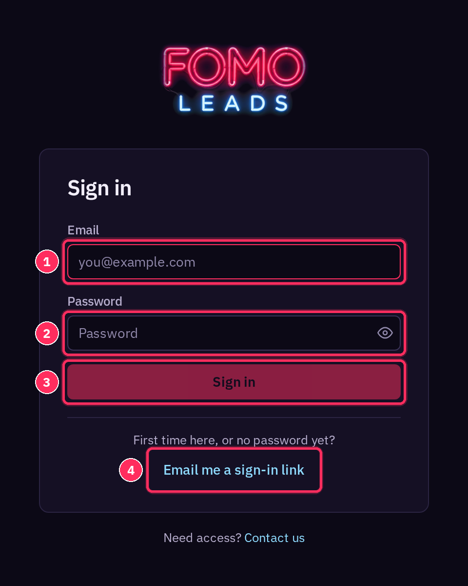
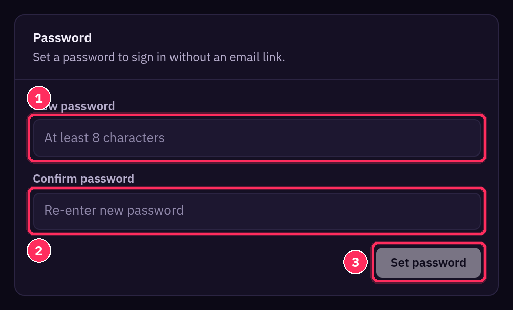
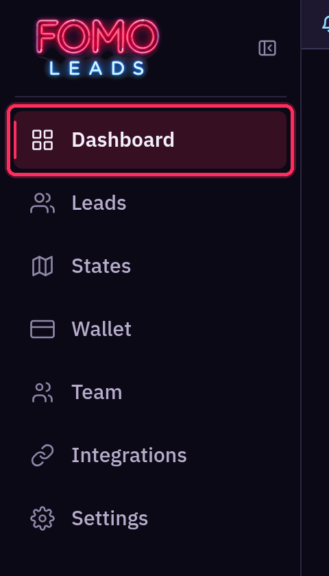
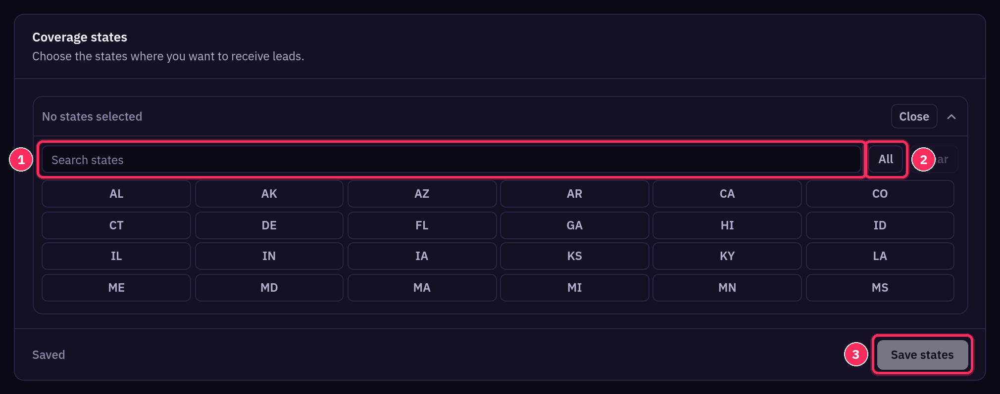
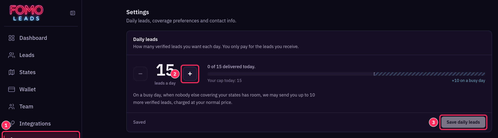
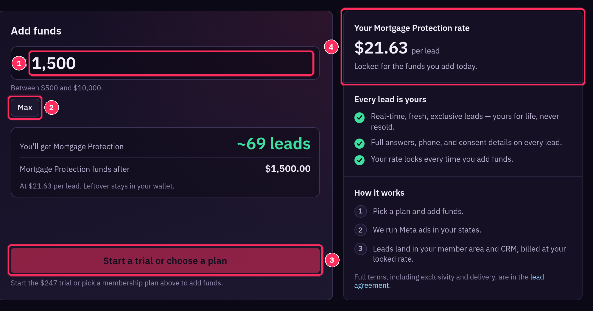
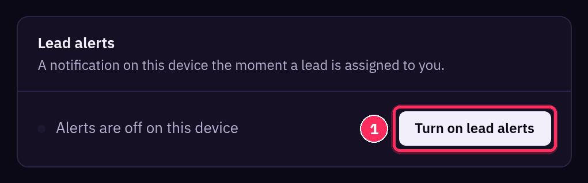
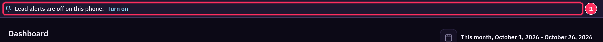
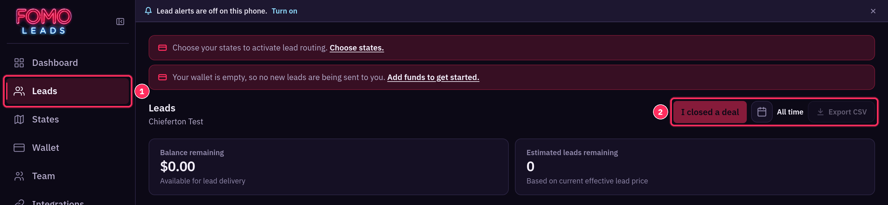

Welcome to Fomo Leads: Onboarding Steps
Your step-by-step setup guide, with a short follow-along video for every step.
We're so happy you're here! 🎉 This guide walks you through everything you need to start getting leads. Every step has a short screen recording of the real dashboard. Watch it, then do the same thing in your own account. Most members finish setup in one sitting, and the first lead usually arrives within 24 hours of finishing setup.
💡 Keep this page open in one tab and your dashboard (https://members.fomoleads.io) in another so you can follow along.
🔐 Step 1: Sign in
Go to https://members.fomoleads.io and sign in with the email you signed up with. No password yet? Use Email me a sign-in link.

- The email is called Your Fomo Leads sign-in link and comes from noreply@fomoleads.io. The link expires in 15 minutes and works once.
- Want to skip the email next time? Go to Settings → Password, set a password, and sign in with your email and password.

🧭 Step 2: Tour your dashboard (and how to reach support)
Your Dashboard is home base. The Finish account setup checklist shows the two things you need before leads can reach you: choose states and add funds.


Use the menu on the left to get around:

| Menu item | What it's for |
|---|---|
| Dashboard | Setup checklist, wallet balance, lead stats and closer stats |
| Leads | Every lead you've received, your stats and Export CSV |
| States | Performance by state |
| Wallet | Trial, plans, adding funds and your locked lead rate |
| Team | Add reps to share leads by round-robin |
| Integrations | Send leads to your CRM, and GoHighLevel disposition sync |
| Settings | Daily leads, coverage states, thank-you page, contact info, password, lead alerts and timezone |
💬 Need help? Email our support team at support@fomoleads.io. You'll also find a Contact us link on the sign-in page.
🗺️ Step 3: Choose your coverage states
Go to Settings → Coverage states, select every state where you're licensed and want leads, then click Save states. This is required before any new leads can route to you.

- Type in Search states to find a state fast, or click states right in the grid.
- All selects every state and Clear removes them all.
- Only pick states you're licensed in.
📈 Step 4: Set your daily leads
In Settings → Daily leads, use + and − to set how many verified leads you want each day, then click Save daily leads. You only pay for the leads you receive.

📦 +10 on a busy day: when nobody else covering your states has room, we may send you up to 10 more verified leads, charged at your normal price.
💳 Step 5: Pick a plan and add funds
Open Wallet. Start with the one-time trial or choose a membership plan, then add funds. Leads are paid from your wallet.


| Option | Price | Ad spend you can load |
|---|---|---|
| Trial | $247 one time, no subscription | Up to $1,000 |
| Launch | $597 per 30 days | Up to $3,000 per period |
| Grow (Recommended) | $997 per 30 days | Up to $6,000 per period |
| Scale | $1,497 per 30 days | Up to $10,000 per period |

- Add between $500 and $10,000 at a time. The page shows roughly how many leads that amount buys.
- Your Mortgage Protection rate is shown on the page ($21.63 per lead when this guide was made). The rate can change, and it's locked for the funds you add at that time.
- The funding button unlocks once you've started the trial or picked a plan. Payments are processed by Whop.
🙋 Step 6: Set up your thank-you page
Your thank-you page is what a new lead sees the moment they submit: your photo, your name, your license number, plus a ready-to-send text and your contact card. Set it up in Settings → Your thank-you page profile. Each part has its own save button.

What to put in each field
| Field | Where in Settings | What to enter | Example | Click to save |
|---|---|---|---|---|
| Photo | Photo and license number → Upload photo | A clear, well-lit headshot. It's cropped to a circle and shown next to your name. Without one, leads see your initials. | Your headshot | (uploads when you choose the photo) |
| License number | Photo and license number → License number | Your license number. Shows as "License No. …" under your name and on your contact card. Leave blank to hide it. | TX-1234567 | Save license number |
| Number your leads text | Use my account number, or uncheck it and fill in Number for lead texts | The US mobile number leads text and save. It's behind the Text and Save-contact buttons. Your account cell doesn't change. | (214) 726-0193 | Save number |
| Text message your leads send you | Message box, with Insert buttons | The text prefilled in the lead's Messages app when they tap "Text [you] now". Up to 300 characters. Placeholders: {lead_first_name}, {rep_first_name}, {state}. |
Hi {rep_first_name}, it's {lead_first_name}. I just got pre-qualified for mortgage protection and I'd like to see my options. | Save message |
| Display name | Your contact card | Your name as leads should see it. It's also the name on your thank-you page. | Jordan Ellis | Save contact card |
| Title | Your contact card | Your job title | Licensed Insurance Agent | Save contact card |
| Company (optional) | Your contact card | Your agency or company | Ellis Family Insurance | Save contact card |
| Email (optional) | Your contact card | The email leads can reach you at | jordan@example.com | Save contact card |
| Website (optional) | Your contact card | Your website | example.com | Save contact card |
| Phone | Your contact card | Filled in for you from Number your leads text | (214) 726-0193 | (set it under Number your leads text) |


👀 Check the preview. The phone on the right updates as you type. Your version includes unsaved changes; Leads see now shows what's live. For a field-by-field walkthrough with a video for each part, see Set Up Your Thank-You Page.
🔔 Step 7: Turn on lead alerts
Go to Settings → Lead alerts and click Turn on lead alerts. When your browser asks, click Allow. Do this on every computer and phone where you want alerts.

- Until alerts are on, you'll also see a reminder at the top of the page with a Turn on link.

- 📱 iPhone: alerts only work from the home-screen app. In Safari, tap Share, choose Add to Home Screen, open Fomo Leads from your home screen, then go to Settings → Lead alerts and turn them on.
- Once alerts are on, the card says Alerts are on for this device and gives you Send test and Turn off on this device.
- If the card says notifications are blocked, turn them on in your device's Settings › Notifications › Fomo Leads, then reload the page.
🔗 Step 8: Connect your CRM (optional)
Want leads in your own CRM too? Go to Integrations, paste your CRM's webhook URL into Webhook URL, and click Save.

For the full walkthrough, including the test payload and GoHighLevel disposition sync, see Sending Leads to Your CRM by Webhook.
🚀 Step 9: What to expect
Once your states are saved and your wallet has funds, we run Meta ads in your states and leads start routing to you. Most members get their first lead within 24 hours of finishing setup.

New leads show up on your Leads page, are sent to your CRM if you connected one, and trigger a lead alert on every device where alerts are on.
✅ You're all set! Questions at any point? Email support@fomoleads.io.